Fishing 빌드 탤런트 (Warrior 및 Barbarian)
Warrior와 Barbarian 클래스 탤런트는 초반 낚시 획득량의 가장 큰 원천입니다. 아래 우선순위로 투자하세요.
| 탤런트 | 효과 | 비고 |
|---|---|---|
 Brute Efficiency Brute Efficiency | 스킬 효율 증가 | 낚시 효율의 1순위 스킬 |
 Idle Skilling Idle Skilling | 스킬링 AFK(방치) 획득량 증가 | AFK 낚시 획득량 강화 |
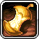 Haungry For Gold | 황금 음식 보너스 증가 | World 4에서 드롭되는 황금 갈비(Golden Ribs)의 효율 효과를 강화 |
| Tempestuous Emotions | 낚시 경험치 획득량 증가 | 레벨업으로 더 강한 낚싯대 장착 가능 |
Barbarian 탭 3 스킬 우선순위:
| 탤런트 | 효과 | 비고 |
|---|---|---|
 Bobbin' Bobbers Bobbin' Bobbers | 미니게임 보상 + 하이스코어 1점당 낚시 파워 +1 | 종종 간과되는 강력한 낚시 파워 원천. 미니게임 하이스코어에 맞춰 투자하세요. |
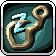 Catching Some ZZZ's | 낚시 AFK 획득량 % 증가 | 낚시 AFK 수익 향상 |
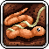 Worming Undercover | 물고기를 즉시 낚을 확률 % | 공격 바에 배치하면 낚시 획득량 증가 |
 Strongest Statues Strongest Statues | 조각상 효과 증가 | 낚시 파워를 제공하는 낚시 조각상 효과 강화 |
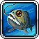 All Fish Diet | 낚시 경험치 % 증가 | 초반 낚시 레벨업에 기여해 더 나은 낚싯대 장착 지원 |
특수 탤런트 우선순위:
| 탤런트 | 효과 | 비고 |
|---|---|---|
 Tick Tock Tick Tock | 전투 및 스킬링 AFK 획득량 증가 | 초반에 다른 방법으로 얻기 어려운 AFK 획득량에 가장 큰 효과 |
 Supersource Supersource | 모든 스킬의 기본 효율 증가 | Party Dungeons에서 획득. 초반 낚시 진입에 매우 효과적이며 이후에도 지속적인 가치 보유 |
 Action Frenzy Action Frenzy | 모든 스킬 속도 증가 | Party Dungeons에서 획득. 낚시 속도 향상 및 물고기 카드 파밍에 유리 |
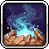 Attacks on Simmer | 공격 이동 AFK 획득량 강화 | Worming Undercover가 활성 스킬로 분류되므로 물고기 획득량에 영향 |
 Frothy Malk Frothy Malk | 부스트 음식 보너스 증가 | 낚시 속도 부스트 음식 효과 강화 |
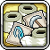 Toilet Paper Postage | 스킬 효율 부여 우표 보너스 증가 | 우표 레벨이 높아질수록 눈에 띄는 효과 |
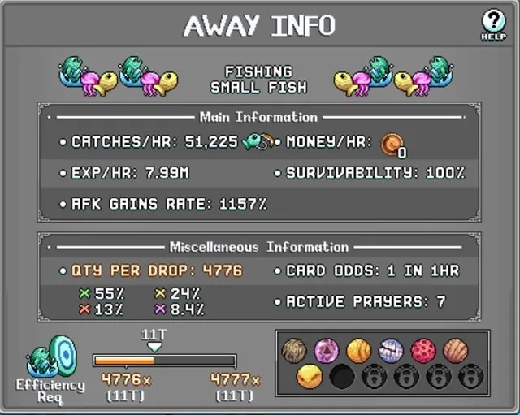
Fishing 장비
최상위 낚싯대와 함께 아래 장비를 갖춰 낚시 능력을 크게 끌어올리세요.
| 장비 (슬롯) | 효과 | 비고 |
|---|---|---|
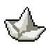 Paper Boat (투구) | 낚시 효율 5% | World 2 크리스탈 몬스터 또는 낚시 레어 드롭 |
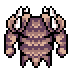 Studded Hide (상의) | 낚시 효율 10% | 모루 제작 |
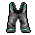 Fishing Overalls (바지) | 낚시 효율 12% | 모루 제작 |
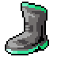 Angler Boots (신발) | 낚시 효율 20% | 모루 제작; Deep Sea Galoshes(35%)로 업그레이드 가능 |
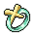 Shallow Watering (반지) | Yellow Depth +20 | Omar Da Ogar (Deepwater Docks) 퀘스트 완료. 황색 심도 물고기(Hermit Can 등) 낚기에 사용 |
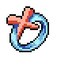 Oceanic Ring (반지) | Red Depth +30 | 위와 동일; 적색 심도 물고기(Jellyfish 등)에 사용 |
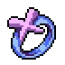 Deepwater Trench Ring (반지) | Purple Depth +40 | 위와 동일; 보라색 심도 물고기(Bloach 등)에 사용 |
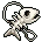 Skullfish Pendant (펜던트) | 낚시 AFK 획득량 5%, Purple Depth +40 | Party Dungeons의 Fishhead Pendant로 모루 제작 |
 Persephones Bouquet (펜던트) Persephones Bouquet (펜던트) | 스킬 AFK 획득량 15% | Party Dungeons |
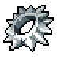 Serrated Rex Ring (반지) | 스킬 효율 8% | Party Dungeons → Baba Yaga 드롭 업그레이드 |
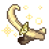 Gilded Efaunt Dislodged Tusks (망토) | 스킬 효율 10% | Gilded Efaunt (W2 나이트메어 보스) |
 Blunder Hero (트로피) Blunder Hero (트로피) | 스킬 AFK 획득량 3% | Scripticus (W1 마을) 퀘스트 라인 |
 King of Food (트로피) King of Food (트로피) | 음식 효과 20% | Picnic Stowaway (W1 Froggy Fields) 퀘스트 라인 |
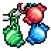 Time Candy Keychain (열쇠고리) | 모든 AFK 획득량 2~5% | Party Dungeons 티어 3 열쇠고리 |
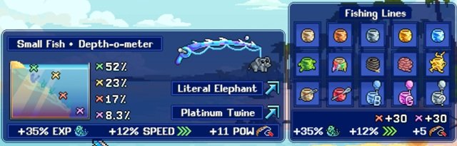
낚시 라인 & 위치 최적화
최적의 낚시 액세서리(라인, 추)는 목표 물고기 종류에 따라 달라집니다. 아래 조합이 아직 해금되지 않았다면 낚시 파워, 낚시 속도, 해당 심도 순으로 최상위 옵션을 선택하세요.
| 물고기 종류 (심도) | 최적 맵 위치 | 최적 라인 & 미끼 조합 |
|---|---|---|
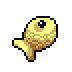 Goldfish (Green) | Salty Shores Right | 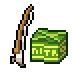 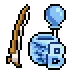 Crash Box + Its a Boy Celebration |
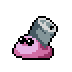 Hermit Can (Yellow) | Salty Shores Left | 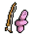 Wormie Weight + Its a Boy Celebration |
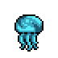 Jellyfish (Red) | Faraway Piers Right | 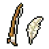 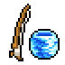 One Pound of Feathers + Platinum Twine |
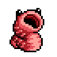 Bloach (Purple) | Faraway Piers Left |  Literal Elephant + Platinum Twine Literal Elephant + Platinum Twine |
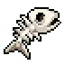 Skelefish (Green) | Deepwater Docks Middle | Crash Box + Its a Boy Celebration |
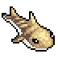 Sand Shark (Yellow) | Deepwater Docks Middle | Wormie Weight + Its a Boy Celebration |
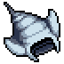 Manta Ray (Red) | Deepwater Docks Right | One Pound of Feathers + Platinum Twine |
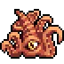 Kraken (Purple) | Deepwater Docks Left | Literal Elephant + Platinum Twine |
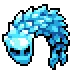 Icefish (Green) | Seasalt Island Any | Crash Box + Its a Boy Celebration |
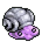 Shellfish (Yellow) | Seasalt Island Any | Wormie Weight + Its a Boy Celebration |
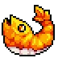 Jumbo Shrimp (Red) | Seasalt Island Any | One Pound of Feathers + Platinum Twine |
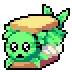 Caulifish (Purple) | Seasalt Island Any | Literal Elephant + Platinum Twine |
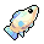 Equinox Fish | N/A | Crash Box + Its a Boy Celebration |
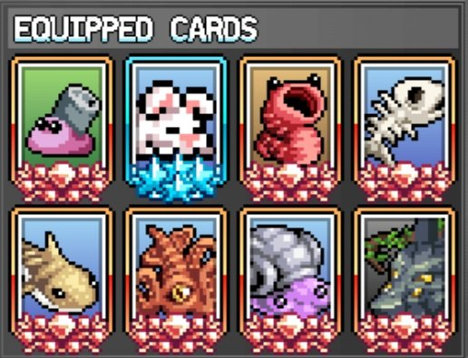
Fishing 카드
카드는 Easy Resources 카드 세트와 함께 중요한 낚시 획득량 원천입니다. World 4에 도달하면 낚시 전용 카드를 모두 패시브로 전환할 수 있어 장착 슬롯 없이도 효과를 누릴 수 있습니다.
| 카드 | 효과 |
|---|---|
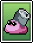 Hermit Can | 낚시 효율 % |
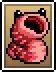 Bloach | 낚시 AFK 획득량 % |
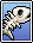 Skelefish | 낚시 효율 % |
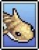 Sand Shark | 낚시 속도 % |
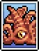 Kraken | 낚시 AFK 획득량 % |
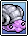 Shellfish | 낚시 효율 % |
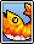 Jumbo Shrimp | 낚시 AFK 획득량 % |
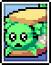 Caulifish | 낚시 속도 % |
 Bunny Bunny | 스킬 AFK 획득률 % |
 Amarok Amarok | 스킬 AFK 획득률 % |
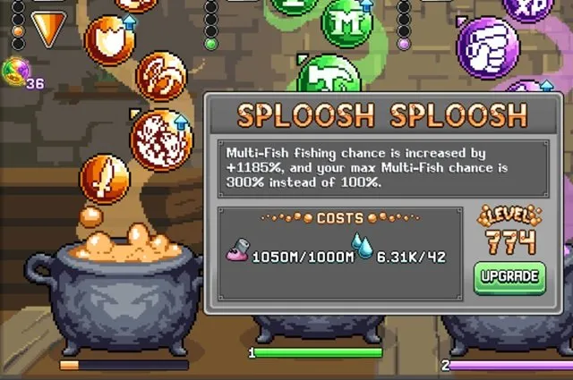
Fishing 연금술
연금술은 주황색 가마솥의 버블을 통해 중요한 낚시 부스트를 제공하며, 계정 성장에 따라 효과가 커집니다.
| 연금술 버블 | 효과 | 업그레이드 재료 |
|---|---|---|
| Sploosh Sploosh (주황 #7) | 다중 물고기 확률 증가 (반드시 장착 필요) |  Hermit Can Hermit Can |
| Stronk Tools (주황 #8) | 낚싯대의 스킬 파워 증가 | 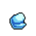 Platinum Ore |
| Warriors Rule (주황 #2) | 주황 패시브 버블의 효과 증폭 |  Spore Cap Spore Cap |
| Roid Ragin (주황 #1) | 총 STR 증가 | 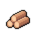 Oak Logs |
노란색 Prowesessary 버블 (Potty Rolls로 업그레이드)도 유용하며, Mamooth Tusk 바이알은 낚시 효율을 제공합니다.
Fishing 빌드 추가 최적화
핵심 아이템 이후 아래 항목들이 소폭이지만 추가적인 효과를 제공합니다.
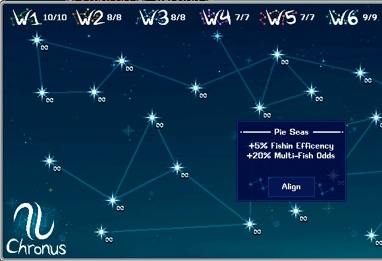
Fishing Star Signs
- Pie Seas (낚시 효율 +5%, 다중 물고기 확률 +20%)
- The Big Comatose (스킬 AFK 획득량 +2%)
- The OG Killer (휴대 용량 +5%, 스킬 AFK 획득량 +1%, 모든 스킬 Prowess +2%)
Fishing 음식
낚시 속도 음식을 통해 전체 낚시 획득량을 높일 수 있으며, 낚시 속도에는 캡이 없습니다. AFK 세션당 각 음식을 1개씩만 장착하고, World 3의 Nutrient Neural Network Automation Arm 업그레이드는 비활성화하여 보관함 음식이 소비되지 않도록 주의하세요.
| 음식 | 효과 | 출처 |
|---|---|---|
| Slurpin Herm | 낚시 속도 20% 증가 | 모루 |
| Aqua Pearl | 낚시 속도 30% 증가 | 이벤트 |
| Candy Cane | 낚시 속도 25% 증가 | 이벤트 |
| Golden Ribs | 낚시 효율 증가 | World 4 몬스터 |
Fishing 조각상
| 조각상 | 효과 | 출처 |
|---|---|---|
 Oceanman Statue Oceanman Statue | 낚시 파워 증가 | 크리스탈 몬스터 |
| Feasty Statue | 음식 보너스 증가 | 크리스탈 몬스터 |
Fishing 우표
| 우표 (탭) | 효과 | 출처 | 필요 재료 |
|---|---|---|---|
 Fishing Rod (스킬) Fishing Rod (스킬) | 낚시 효율 | Fishpaste97 | Fly |
Fishing Post Office
| 박스 | 효과 |
|---|---|
 Sealed Fishheads Sealed Fishheads | 낚시 효율 %, Prowess 효과 %, 낚시 AFK 획득량 % |
 Carepack From Mum Carepack From Mum | HP 음식 효과 %, 부스트 음식 효과 % |

Fishing 기도
| 기도 | 효과 | 출처 |
|---|---|---|
 Skilled Dimwit Skilled Dimwit | 스킬 효율 증가, 스킬 경험치 획득량 감소 | Goblin Gorefest 웨이브 25 |
 Zerg Rushogen Zerg Rushogen | AFK 획득률 증가, 휴대 용량 감소 | Goblin Gorefest 웨이브 121 |
Poppy the Kangaroo Mouse의 물고기 연못
World 2 마을 상점에서 Secret Map을 구매하여 접근할 수 있는 Poppy는 증분(인크리멘탈) 미니게임으로, 낚시 효율 %, 낚시 경험치 %, AFK 획득량 %를 제공합니다. 모험과 병행하며 꾸준히 진행하기 좋은 계정 성장 메커니즘입니다.